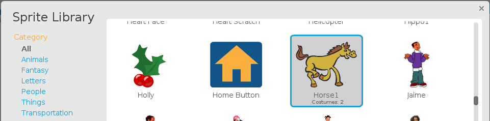
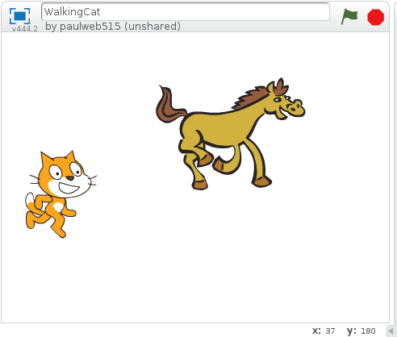

Creating sprites
Sprites are the actors on the Scratch stage. Sprites can be characters like people and animals, or objects like cars and trees. Scratch comes with a selection of suggested sprites called the Sprite Library.
You can have several sprites on stage together, each with their own scripts. When you create a new Scratch project, the cat sprite is already on the stage. You can add a sprite to the stage by creating a sprite.
To create a sprite
- Click Create to create a new Scratch project.
- From the New sprite toolbar, click Choose sprite from library.
- Select a sprite from the library and click OK. 
- Click File > Save Now to save your project.
The Scratch interface opens a new project with one cat sprite in it.
The Sprite Library dialog appears.
Your selected sprite appears on the stage.
Your project is saved.
Now that you know how to create a sprite, you probably want to name it. See Renaming sprites to learn how to name your sprite.